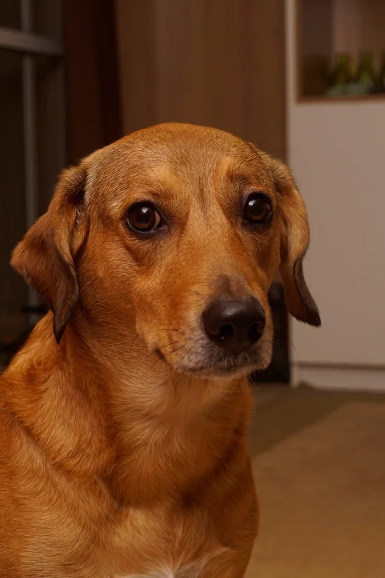
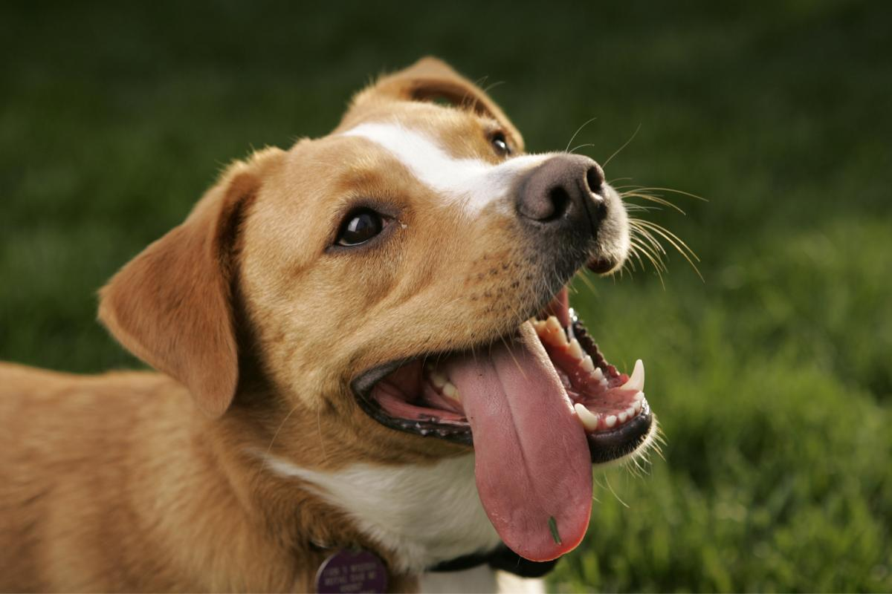

Ellos esperan por vos
Todos nuestros animales están vacunados, desparasitados y castrados. Conocé a algunos de los que buscan un hogar lleno de amor.


Negrito
Tranquilo y leal. Ideal para departamento con espacio. Bueno con niños.
Quiero adoptar
Mishi
Muy independiente pero le encanta que le rasquen la pancita. Usa arenero perfectamente.
Quiero adoptar
Toby
Cachorro súper energético, aprende rápido. Ideal para familia activa.
Quiero adoptar

Rocky
Muy protector y fiel. Requiere dueño con experiencia en perros grandes.
Quiero adoptar